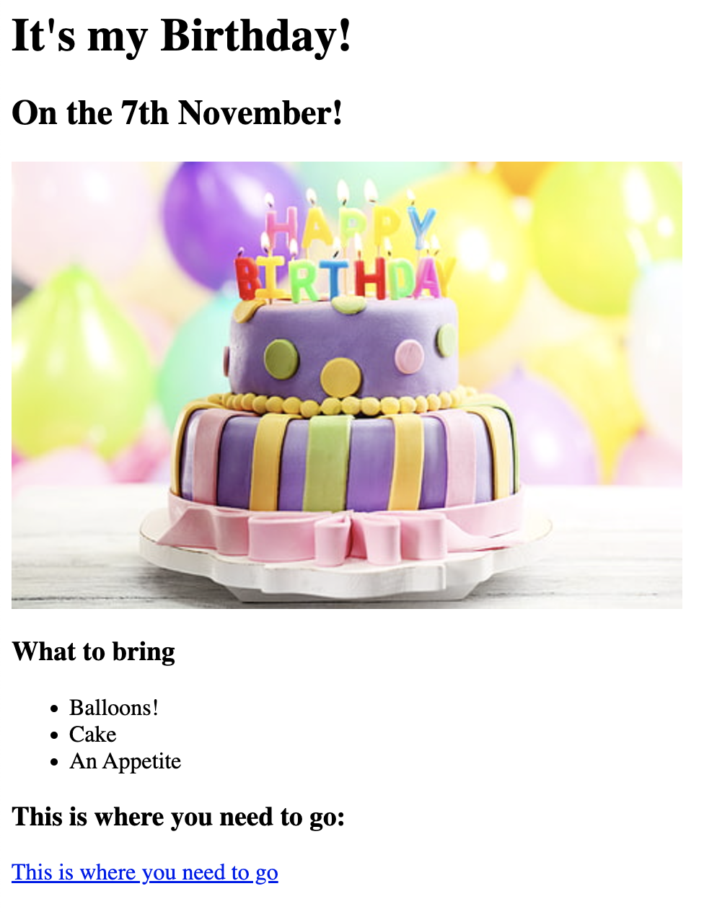

This is my first project based website based on lessons from Angela Yu's Web Development Bootcamp. Please feel free to explore my projects!
This project utilises lists, images, and headings. Have a look below for a taster of how it looks, or click the link to visit the page.

I wanted to have a little go at making a page completely on my own and sourcing my own things, so I made a little page about my favourite places. It includes nested lists, paragraphs, headings, images, and links!